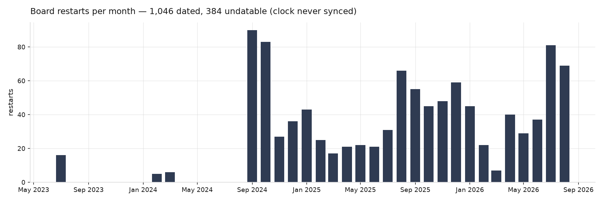

Reliability¶
The light schedule is dependable. The board running it is less so.
Restarts per month¶

1,030 dated restarts, plus 376 that cannot be dated because the clock never synced during that boot.
A restart leaves no timestamp of its own — it is a bare channel-name line, the header the logger writes when it is imported. Each one is therefore dated from the first timestamped record of that boot. The folder name is only the retrieval date and is never used as a time axis.
Two features stand out. A step change around September 2024 (90 and 83 restarts), and July 2026 at 81 — the highest in nearly two years, against a typical 20–40.
The July 2026 escalation¶
The device's own log gives the same signal from a different direction. Counting boots that occurred between midnight and 07:00:
| period | overnight restarts |
|---|---|
| Jan–Jun 2026 (6 months) | 2 |
| Jul–Aug 2026 (8 weeks) | 20 |
Nobody power-cycles an incubator at 02:20 in the morning. And all twenty carry correct 2026 dates, meaning the RTC survived — which rules out power loss and hard reset, and leaves the one reset class that preserves the clock: a soft reset, exactly what Ctrl-D over the USB REPL does.
The board is plugged into a Raspberry Pi running Thonny. 02:00–07:00 is when a Pi runs
unattended-upgrades, cron.daily and logrotate. Anything that restarts the IDE or
re-enumerates USB will have Thonny reconnect — and Thonny soft-reboots the board on
connect.
That remains a hypothesis. Confirming it means correlating those timestamps against
last reboot and /var/log/apt/history.log on the Pi, and answering one question:
what changed on that machine at the start of July 2026?
The freeze¶
Separately from the restarts, the board would occasionally stop dead — unresponsive, REPL included, lights stuck in whatever phase they were in. A power cycle recovered it.
For three years the logs could not say when this happened, because a frozen board writes nothing and an unplugged board also writes nothing. The two are indistinguishable in a log that only records events.
Since 23 August 2026 the firmware writes a heartbeat every ten minutes carrying monotonic uptime alongside the wall clock. The first instrumented run:
19:34:23 boot
20:00:31 → night
08:00:31 → day
17:27:28 power cycle
131 heartbeats, no gap anywhere, every interval exactly 600 s. Wall span 21.67 hours, uptime span 21.67 hours — identical to the second, so no hidden reset and no clock slip.
One clean night is a baseline, not a cure. But it establishes what healthy looks like, and from here a freeze stops being a mystery and becomes a gap in a sequence we can measure to the minute.
Diagnoses that did not survive contact with the data¶
| hypothesis | outcome |
|---|---|
| Missed 30 s scheduling window | Disproven — transitions land at 08:00:0x and 20:00:0x throughout |
| Brownout when 132 pixels go to full white | Ruled out — separate supply, and freezes do not cluster at the transition times |
| Filesystem full, log writes failing | Ruled out — 314 KB used of 848 KB |
| Blocked USB-CDC write into an IDE that stopped reading | Plausible, unproven |
| Host-initiated soft reset from the Pi | Leading, with a dated onset |
Worth recording that machine.reset_cause() cannot be trusted on this firmware: it
reported PWRON for a soft reboot and WDT for a boot where no watchdog was ever
armed. The pico-sdk routes several reboot paths through the watchdog block, so the
reason register is set by things that are not your watchdog.